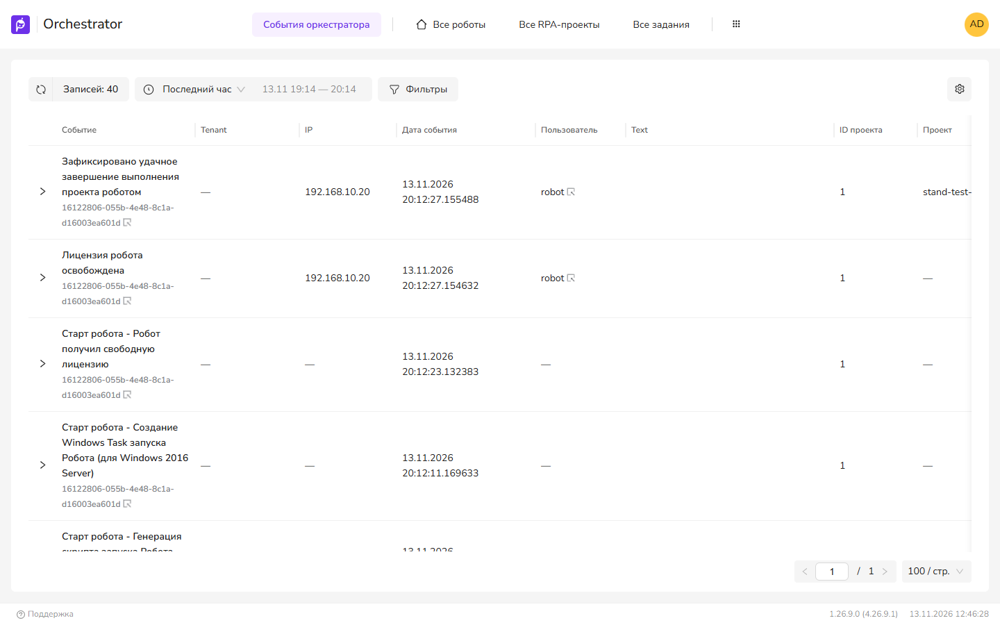

Журналы
Виды журналов Оркестратора, их просмотр в UI4 и очистка администратором. Журналы служб (файлы, stdout) описаны в Журналы служб.
Виды журналов
| Журнал | Содержимое | Просмотр в UI4 | Таблица в БД журналов |
|---|---|---|---|
| Журнал робота | События робота при выполнении проекта | Журналы → Оркестраторные роботы; кнопка Журнал у робота в Роботы → Все роботы | RobotLogMessages |
| Журнал проекта | Сообщения, записываемые проектом | Там же, источник события — «Проект» | RobotCustomLogMessages |
| Журнал Оркестратора | Действия пользователей и служб, ошибки, инциденты безопасности | Журналы → События оркестратора | OrchEvents |
| Журнал клиентских (attended) роботов | Операции роботов, запущенных пользователем | Журналы → Клиентские роботы | AttendedRobotLogMessages |
Все журналы хранятся в отдельной БД журналов (в поставке — ltoolslogs). Записи принимает служба RobotLogs.


Оркестраторные роботы
В верхней части — период: «За час», «За 24 часа», «Произвольный». В таблице — операции: Код операции, даты начала и окончания, результат, робот, RPA-проект. Внутри операции — события с колонкой Источник: «Робот», «Оркестратор» или «Проект». Если для события сохранён снимок, в нём доступен Снимок рабочего стола.
Типы сообщений робота (флаги LogMessageType) в UI4: «Информационное», «Ошибка», «Отладка», «Сеть», «Точка останова», «Проект выполнен», «Успех», «Тест».
События оркестратора
Фильтр Класс события: «Информационное», «Ошибка», «Инцидент безопасности», «Корректировка» (enum OrchestratorEventType). Чтобы увидеть события одной операции, вставьте значение в фильтр Код операции, скопировав его из таблицы. Каждый вход пользователя записывается в этот журнал как «Инцидент безопасности» (событие Login); отключение настройкой не предусмотрено.
Для меню Журналы требуется право просмотра событий Оркестратора (OrchEvents.View), для журнала робота — RobotLogs.View.
Очистка (администратору)
Настройки → Система → Журналы. Вкладка видна, только если Оркестратор работает на PostgreSQL.
- Очистить — удаляет все записи журналов робота и Оркестратора. Выполняется командой
TRUNCATEпо таблицамOrchEvents,RobotCustomLogMessages,RobotLogMessages,Logs,RobotScreenFiles. Восстановить данные невозможно. - Выгрузить дамп — выгрузка журналов в архив. Во время выгрузки попытка очистки возвращает сообщение «Выгрузка журналов уже запущена.»
- Таблица секций (Схема, Таблица, Таблица секции, Год) — показывает секции таблиц
LogsиOrchEvents, если они созданы. Порядок секционирования — Обслуживание БД.
Удаления старых записей по сроку в Оркестраторе нет: ни для журнала робота, ни для журнала Оркестратора, ни для снимков экрана. Объём ограничивается секционированием и удалением старых секций.